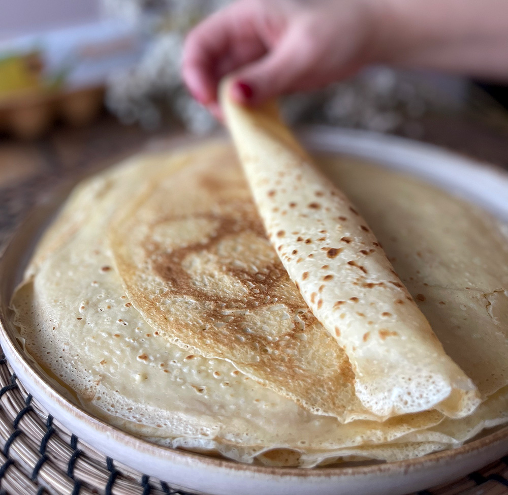

Filloas de leche

Las filloas de leche son un plato típicamente gallego, cocinadas con huevos, harina y leche como ingredientes principales.
Las filloas de leche son una receta tradicional gallega, parecida a las crepes, conocidas por su textura fina y sabor suave. Se elaboran con ingredientes sencillos como leche, harina y huevos, y son muy populares durante épocas festivas o celebraciones familiares en el noroeste de España.
Se pueden disfrutar solas, con un poco de azúcar espolvoreado, o rellenas de miel, nata, o mermelada. Fáciles de hacer y muy versátiles, las filloas son un dulce que conecta con la tradición y el sabor casero.
Ingredientes:
- 500 ml de leche entera
- 125 g de harina de trigo
- 3 huevos
- 1 pizca de sal
- 1 cucharadita de azúcar (opcional, para versión dulce)
- Mantequilla o tocino para engrasar la sartén
Pasos:
- En un bol grande, bate los huevos y añade la leche poco a poco mientras mezclas.
- Agrega la harina tamizada lentamente, mezclando bien hasta obtener una masa líquida y sin grumos.
- Añade la pizca de sal y el azúcar si deseas una versión dulce. Mezcla de nuevo.
- Deja reposar la masa al menos 30 minutos a temperatura ambiente.
- Calienta una sartén antiadherente y úntala con un poco de mantequilla o tocino.
- Vierte una pequeña cantidad de masa, distribuyéndola en una capa fina.
- Cocina a fuego medio durante 1-2 minutos hasta que los bordes se despeguen, luego da la vuelta y cocina unos segundos más.
- Repite hasta acabar la masa, engrasando la sartén según sea necesario.
- Sírvelas solas, con azúcar, miel, mermelada o el relleno que prefieras.
Home